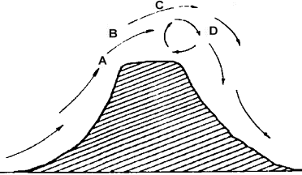

Teoría de Vuelo para Pilotos de Planeador
Stafford Allen
Capítulo IX
LOS PELIGROS OCULTOS
Si
manejamos un triciclo de reparto no tenemos el menor interés en chocar contra un ómnibus
que viene en sentido contrario. El peligro y, en consecuencia, los resultados de esta
acción son obvios. Pero la verdadera amenaza es el ómnibus o el auto que no vemos. El
aire, como hemos dicho antes, es invisible y, por lo tanto, el peligro que encierra tiene
que ser presentido antes que visto. Sin embargo, el buen piloto de planeador ve el
aire y su comportamiento, ya que se ha estado entrenando todo el tiempo sobre lo que está
haciendo este elemento. Con el objeto de ayudar al alumno a adquirir este instinto incluimos
este capítulo sobre algunas de las trampas que pueden encontrarse.
GRADIENTE DEL VIENTO
Cuando
sopla viento, la capa inferior de aire es frenada por la fricción con el suelo. El aire
que se encuentra a 3 centímetros sobre el suelo puede hallarse casi estacionario; a 1,50
metros puede que se perciba una ligera brisa; y a 150 metros tal vez sea un
fuerte viento. Este efecto del incremento de la velocidad del viento con la altura es muy
pronunciado cerca del suelo y se conoce como gradiente del viento. Siempre se
encuentra presente en algún grado y es afectado por muchas cosas, de las cuales la más
importante probablemente es el tipo de suelo sobre el cual se desarrolla el viento. Las
zonas boscosas harán que el aire se desplace más lentamente que en el caso de
superficies planas y libres. Asimismo, el efecto del gradiente del viento es mayor con
vientos fuertes que con brisas ligeras.
Tomemos un
caso extremo para ver cómo esto afecta al planeador. Imaginemos un viento que sopla a 50
kilómetros por hora a 90 metros de altura y a cero kilómetros a 85 metros. Si un
planeador vuela de frente al viento a 60 kilómetros por hora y a una altura de 100
metros, su velocidad real sobre el suelo será de 10 kilómetros por hora. Cuando el
planeador desciende a través del aire y llega a los 85 metros se encuentra con que el
viento disminuye repentinamente hasta que cesa por completo hasta quedar en calma
completa, con lo que la velocidad de la máquina respecto al aire será de 10 kilómetros
por hora. En consecuencia, el planeador entra en pérdida y lo hace en forma muy repentina
y aguda. Este ejemplo extremo resulta, por supuesto, imposible en la práctica, pero sí
es muy posible que la velocidad del viento sufra una modificación de 25 kilómetros o
más entre los 100 y los 5 metros sobre el suelo. En este caso, mientras el planeador se
aproxima con viento de frente para aterrizar y desciende desde los 100 metros, habrá una
insidiosa tendencia del viento a disminuir
Las
medidas que deben tomarse son obvias. Haga la aproximación con suficiente velocidad y
prevenga la disminución repentina del viento poniendo la proa hacia abajo tanto como sea
necesario. El gradiente del viento es a menudo muy marcado cuando se aterriza en la cima
de una colina.
Hay un
punto que necesita ser mencionado. Si usted trata de hacer un viraje muy escarpado en un
gradiente de viento muy fuerte, las velocidades reales de las alas superior e inferior
pueden ser muy distintas y esta diferencia es más marcada cuanto mayor es la envergadura
del velero. Cuando nos hallamos con viento de cola el ala situada a un nivel inferior
encontrará mayor velocidad del aire y el planeador necesitará cierta cantidad de alerón
para obligarlo a hacer el viraje. A medida que completa el viraje hasta hallarse frente al
viento mientras desciende, la punta del ala superior es la que enfrenta una mayor
velocidad del viento y el planeador puede muy bien mostrar una violenta tendencia a girar
en exceso sobre su eje longitudinal o sea a escarpar. La moraleja es clara: no haga virajes escarpados cerca del
suelo.
TURBULENCIA

Por desgracia, los objetos comunes tales como casas, hangares, árboles y colinas no tienen una forma perfectamente fuselada.
Como
ejemplo, veamos la figura 22. Esta representa una sección en corte de una ladera para
vuelo a vela, con el viento soplando sobre uno de los costados, con un borde agudo en la
cumbre. El viento puede comportarse de distintas maneras, lo cual dependerá de muchas
circunstancias, pero bien puede hacerlo tal como se ilustra, es decir, bajo la forma de
una corriente pareja y constante en la parte frontal de la colina, un gran vórtice o
rotor en la cima y varios remolinos en la parte descendente del viento, del otro lado.
Un
planeador en las posiciones A, B o C encontrará un ascenso relativamente bueno y
constante, pero dejémoslo desplazarse hasta D, y veamos qué ocurre. En primer lugar,
se encuentra en una corriente descendente fuerte, perdiendo altura con rapidez. En segundo
término, a medida que pica hacia el otro lado de la colina está volando en un área
donde el viento sopla desde atrás suyo y, por lo tanto, reduciendo su velocidad con
respecto al aire. Si ha sido llevado bastante lejos, puede considerarse muy afortunado si
alcanza a llegar al borde de la cima nuevamente, sin verse obligado a descender. El
peligro de entrar en pérdida sobre la cima de la colina es muy considerable. Por lo
tanto, piense qué va a hacer el aire y no descienda del otro lado de una cima empinada.
La
turbulencia causada por hangares, casas y árboles es muy difícil de apreciar y dado que
los efectos se advertirán muy bajo, durante la aproximación, la única recomendación
que puede hacerse es la de mantenerse a buena distancia de los mismos. Si usted tiene que
aterrizar a sotavento de algún obstáculo grande, realice la aproximación con bastante
velocidad como para incrementar la efectividad de los controles y dominar el efecto de un
intenso gradiente del viento que seguramente provocará la parte protegida bajo viento.
En una
oportunidad pudimos apreciar una hermosa demostración del efecto de la turbulencia. Un
alumno de la Real Fuerza Aérea estaba haciendo su aproximación para aterrizar en un
Tiger Moth. El viento tenía casi la fuerza de un ventarrón y el piloto eligió una
aproximación baja, con su ala derecha sobre el borde de una pared. Hizo un perfecto
aterriza invertido. El aparato fue invertido en forma limpia por la atracción hacia
arriba provocada por la pared sobre su ala
derecha. Debido a la aproximación ridículamente baja la máquina casi no resultó
dañada.
HIELO Y ESCARCHA
Cualquier
cosa que interfiera con el perfil del ala de un planeador reducirá la sustentación e
incrementará la resistencia. El hielo es aquí el principal delincuente, a pesar de que
los efectos son parecidos si se permite que la alas -y en especial los bordes de ataque-
estén ásperos o salpicados de barro.
El hielo
puede formarse sobre las alas de dos maneras. Primero, puede depositarse en forma de
helada mientras el planeador se halla en el suelo. Si esto ocurre conviene limpiar las
alas antes de salir a volar. De lo contrario se logrará un pobre remolque y la eficiencia
del planeador empeorará en el aire. Existe un gran peligro
en tratar de despegar con hielo en las alas, particularmente si el planeador tiene perfil
laminar. La pérdida de performance es sorprendente. Esta clase de hielo es una amenaza
real para los aviones a motor. Algunos aviones pesadamente cargados han fallado en
despegar y, en consecuencia, se han estrellado al final de la pista debido a una
subestimación del efecto del hielo o la escarcha en las alas.
La segunda
forma en que puede formarse hielo en las alas es en el aire, en nube, en la capa de
formación de hielo. Esta capa, que puede hallarse a cualquier altura, generalmente se
ubica alrededor de los 0 a 10 grados centígrados. Si un planeador vuela por algunos
minutos en esta capa, el hielo se formará rápidamente en los bordes de ataque de las
alas, en todo punto que sobresalga de la máquina, tal como el tubo pitot, etc. El efecto
en las alas es, por supuesto, una reducción de la sustentación y un incremento
de la resistencia. Sin embargo, el hielo no se encuentra a menudo por debajo de los 1500 a
1800 metros, por lo que la pérdida de eficiencia del planeador no tendrá como resultado
poner al piloto en ningún peligro
serio y, en cualquier caso, el hielo se habrá derretido para cuando el aparato llegue al
suelo. Sin embargo, conviene recordar que nuestra idea de la distancia que podemos
alcanzar con una altura dada puede tener que ser reconsiderada si el planeador soporta
mucho hielo, especialmente si es del tipo laminar.
Por otra
parte, debido al hielo el planeador es más pesado, por lo que la velocidad de pérdida
será mayor. Ya hemos discutido los efectos de esta clase de formación de hielo en el
tubo pitot y venturi, pero es un hecho curioso que a menudo no son bloqueados hasta que el
hielo comienza a derretirse. Este tipo de formación de hielo, por lo tanto, no constituye
un riesgo grande para los planeadores pero, repitamos, muchos aviones a motor pesadamente
cargados se han estrellado debido a esta causa. Aquí, por supuesto, la pérdida de
eficiencia es importante y dado que el régimen de descenso es elevado, el avión puede no
estar en condiciones de desprenderse del hielo antes de tocar tierra. Por esta razón
muchos aviones modernos disponen de los más avanzados sistemas de descongelación.
Volver Arriba